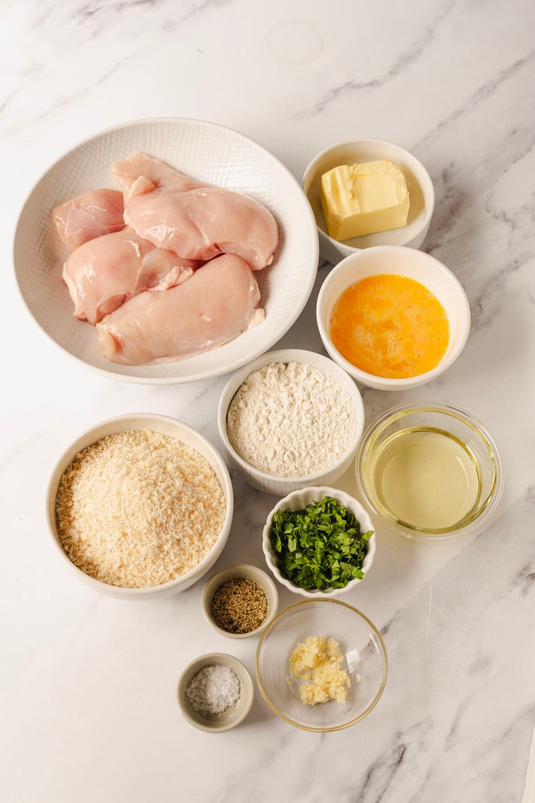

CHICKEN KYIV
"This chicken has a buttery soul."

Ingredients
- 500g chicken breast
- 100g butter
- 10g fresh dill
- 2–3 eggs
- 1 glass of flour
- Breadcrumbs
Recipe
- Chop the dill and mix it with soft butter. Shape into a log and chill in the fridge.
- Cut a pocket in the chicken breast and place the herbed butter inside.
- Coat the chicken in flour, then dip in beaten eggs, and finally cover with breadcrumbs.
- Fry for 3 minutes on each side until golden.
- Finish in the oven at 180°C (350°F) for 10 minutes.